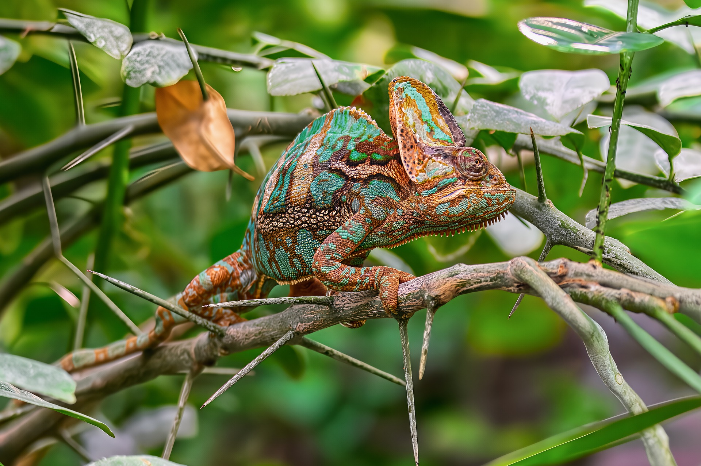

El camaleón vive principalmente en bosques, selvas y zonas cálidas de África y algunas partes de Asia. Pasa la mayor parte del tiempo en los árboles, donde se mueve lentamente entre las ramas. Es un reptil insectívoro que se alimenta de insectos como moscas, grillos y saltamontes. Utiliza su larga lengua para atrapar a sus presas rápidamente. También es conocido por su capacidad de cambiar de color para comunicarse o adaptarse a su entorno.